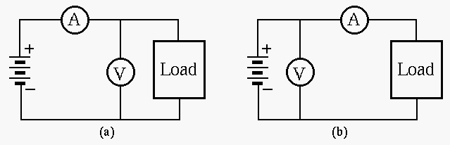

E84 Lab 4: Design, Build, and Test a Multimeter
In this lab you are to use either of the two multimeter kits (AMK200 and M1250) available in the stockroom to build a multimeter. The lab contains the following two parts:

What are required of the ammeter and the voltmeter to minimize their influences on the measurements?
How would the ammeter and the voltmeter affect the measurement of the current and the voltage in either of the configurations (a and b)?

Find the resistance  so that when the incoming AC voltage is
volt (RMS), the meter shows a full scale display.
so that when the incoming AC voltage is
volt (RMS), the meter shows a full scale display.


| positions | ||||
| 20 |
200 |
2000 |
20 |

You can use either of the two different multimeter models available in the stockroom. They are very similar to each other, in terms of their circuits, and the degree of difficulty to build. In this part, you need to understand how the DC voltage and current are measured, and come up with the values of the resistors used for measuring DC voltage and current. (You are NOT required to do any calculation for the AC voltage or resistance measurement.)
It will be considered as an honor code violation if you copy the values of these resistors from the schematics of these multimeters which you may be able to find on the Internet. Show your own derivation and keep at least 2 digits after the decimal point in the values of the resistors.
Find the values of the resistors used for DC voltage and current measurements (values not shown in the diagram).
Find the values of through  for DC voltage measurement,
and the values of , , and for DC current measurement.
for DC voltage measurement,
and the values of , , and for DC current measurement.
Then, build and test the multimeter, which you can keep and use in the future! Make sure it works correctly for all measurements.